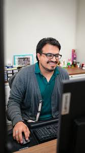
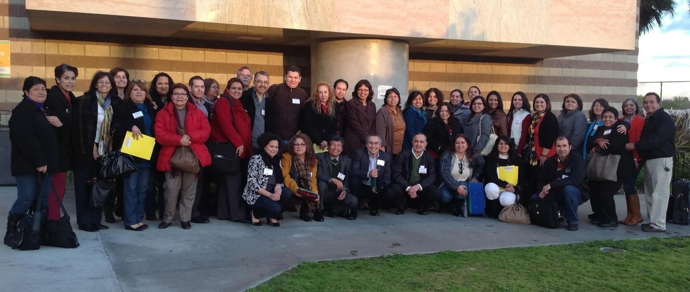
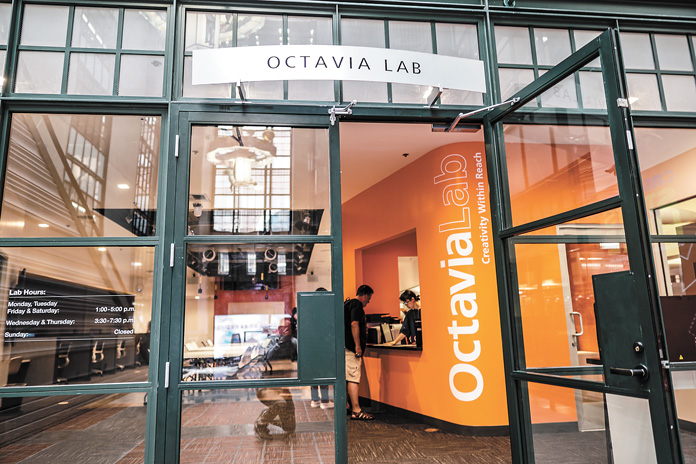

Section
Tasks and Duties
This section focuses on the Emerging Technologies Librarian position at the Los Angeles Public Library, which is, as of the time of this dossier’s publication, held by Edwin Rodarte. In our interview with Edwin, we discussed this particular role at LAPL, the responsibilities and tasks he undergoes at his institution, and the training he has both brought to the role and gained from it.
As we discovered, specialized positions like Edwin’s are oftentimes not already present at institutions, and regularly, incoming professionals have the opportunity to mold them to the differing technology needs of their institutions. Because of this, the field of “emerging technologies” is broad, and positions that focus on technology services, needs, and education look different from institution to institution. For a broader outlook on similar positions within this field, you can look at our Job Market Outlook section. This section will specifically highlight the current position at LAPL as well as Edwin’s personal training, tasks, and affiliations.
Edwin’s Background

- MLIS — SJSU (2009)
- Specialized training in HTML, interest in data analysis and the tech world
- Passion for technology accessibility
-
REFORMA — Los Angeles chapter
- This non-profit organization seeks to promote the access to library and information services for Latino and Spanish-speaking communities. Since its establishment in 1971, REFORMA has worked tirelessly to champion these services for the 40 million Spanish speaking people in the U.S.
- Additionally, the organization awards yearly scholarships to prospective MLIS graduate students interested in working with the Spanish-speaking community.
- Edwin is the incoming president of the LA chapter!

Training
- HTML coding courses at SJSU
Daily Responsibilities
-
Current technology initiatives he is responsible for:
- Digital Inclusion Work
- Tech2go, Cybernauts, tech kiosks
- A.I. taskforce (AI Internal Policy)
- Short story dispensers
- Data analysis
- He is the manager of a multi-unit department!
- His work for the past few years has been mainly focused on digital inclusion
- “For most, [when they define ‘emerging technologies’] they will think of shiny new gadgets. For the library, it oftentimes means tried and tested tech”
- Edwin focuses day-to-day on initiatives that get existing technologies in the hands of daily users in impactful and accessible ways.
- Edwin is currently working on the creation of LAPL’s A.I. policies and guidelines.

Affiliations and Committees
- REFORMA LA
- LGBTQIA services committee at LAPL
- Spanish Language Translations committee at LAPL
- Nominated for Library Journal’s 2025 “Movers and Shakers — Innovators” recognition
Other Job Aspects
- All documentation he creates is bilingual! This is essential for accessibility and inclusion.
- His job also requires constant evaluation of what technologies, tools, and services are worth adopting.
- Implementing new technologies at LAPL requires communication and collaboration across a multitude of departments! From deciding budgets to procuring devices themselves, drafting policies, writing instructions, developing branding and managing staff, there are so many factors that go into tech services at the library.
- Edwin recommends incoming professionals to take project management courses.